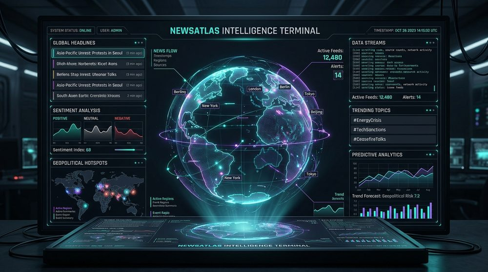

NewsAtlas Intelligence Terminal
Global situational awareness dashboard that aggregates and correlates live news wires, macroeconomic indicators, weather systems, and stock indices onto an interactive Mapbox globe. Powered by Llama 3.3 via Groq for instant geopolitical synthesis upon selecting any territory.
Architecture & Pipeline
- React 19 SPA: Interactively projects Mapbox GL JS 3D coordinates.
- Vercel Serverless Fanout: Queries authenticated news and market APIs with server-side secrets.
- Regional Normalization: Collates and weights feeds into structured contextual payloads.
- Groq AI (Llama 3.3): Generates localized intelligence summaries with sub-second latency.